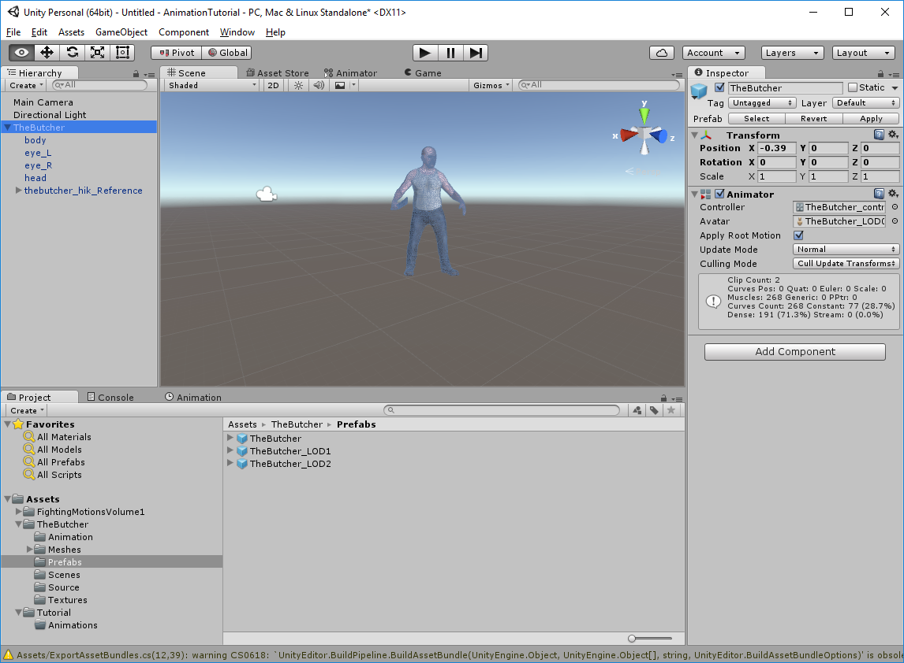
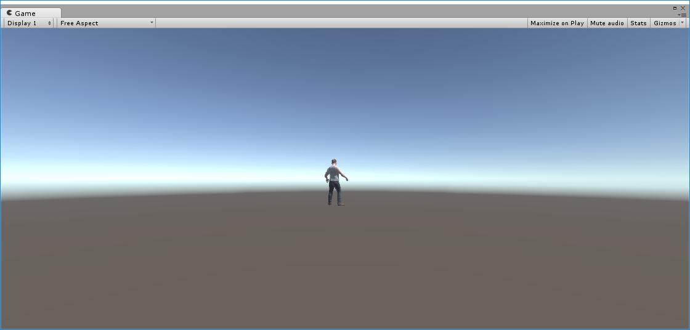
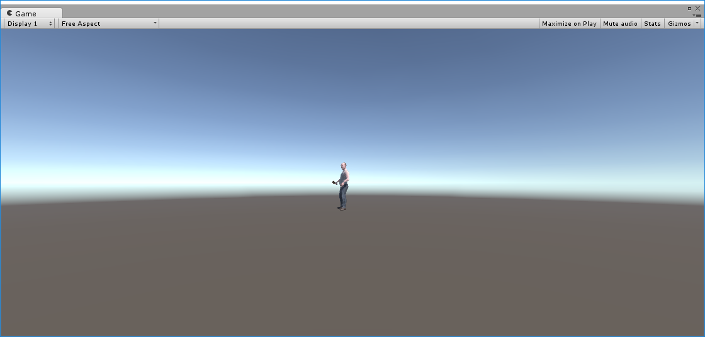
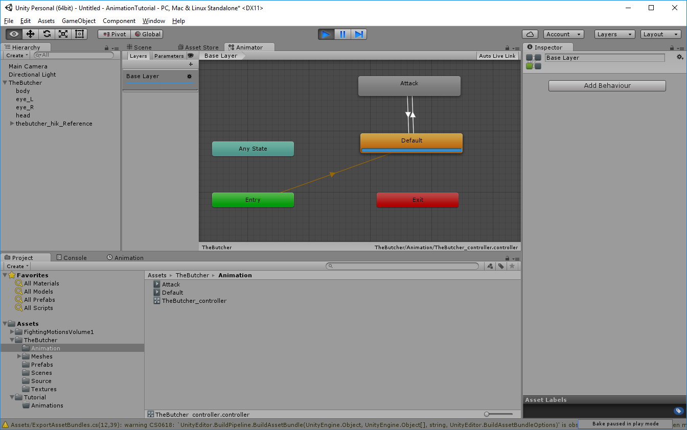
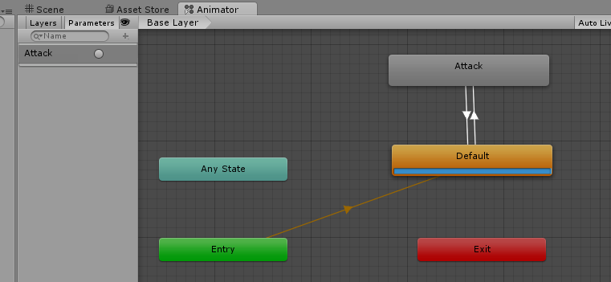
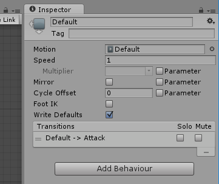
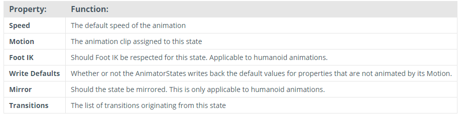
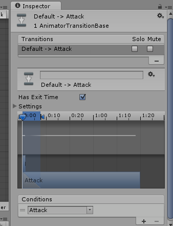
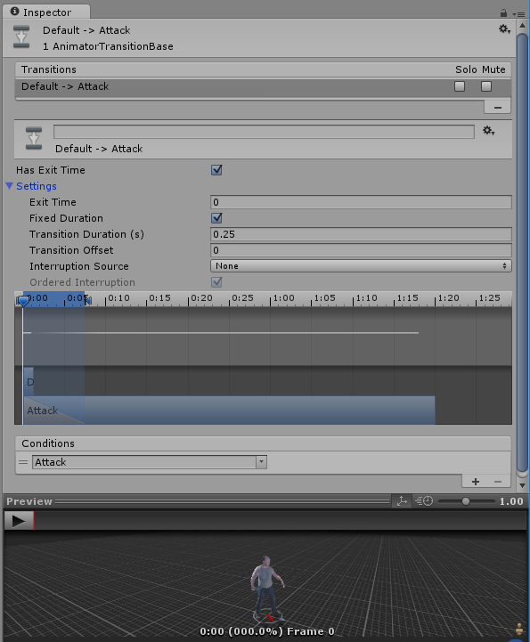
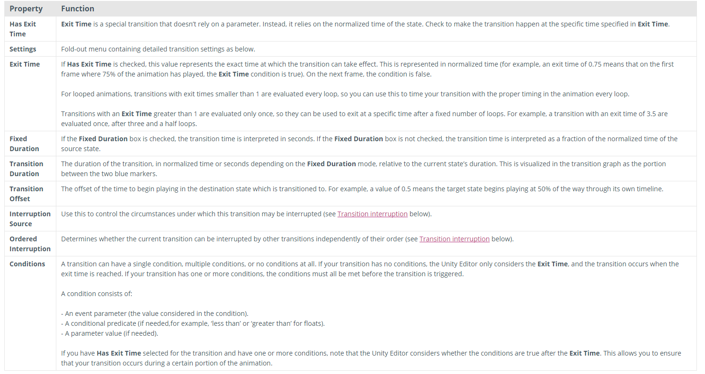

In the Project View, under TheButcher, look for TheButcher.prefab under TheButcher/Prefabs folder, and drag it into your Hierarchy screen. This will be our template entity.

Notice that The Butcher already has an Animator Component, in the Inspector window. Let's take a look at his Animator Controller to give a hint on what we'll be creating. If you have a Game tab, click and drag it off of the main Unity screen, so that it's separate window.

If you see that the Butcher has his back to you, we'll want to turn him around so you can see his animations better. To turn him around, go to the main Unity Window, click on the Butcher in the Hierarchy. This will open up his Inspector window. Change the Y rotation to 220.

In the main Unity screen, you'll see a Play button. When depressed, it'll play the Animation in the Game tab. Press the Play button, and he'll swing his butcher knife once, then stop.
Let's see what's happening.
In the Unity main screen, click on the Animator tab. If you do not have an Animator tab, go to Window, and select Animator.

In the Animator, you can see some colourful boxes. These are called States, and the lines between them are Transitions. A transitions allow us to flow from one state to another, based on the transition Conditions on the Transitions. The states themselves can be animation clips, Entry / Any State / Exit states, Empty states or Sub-States. We'll cover these more in depth later.
If the Play button is still blue, press it again to turn it off, then turn it back on. You'll see Default briefly flash, then the Attack state lights up with a progress bar, as it goes through the animation, as viewable through the Game screen.You'll also notice, briefly, that the Transition Line from Default lights up and can see it going up into Attack, then, once the Attack animation is complete, it goes back down the other Transition line.
Above the Base Layer, you'll see a Layers and Parameters tab. Layers allow you to have complex animations in which two or more parts of the entity can be animated differently. Parameters is what triggers our events.
Let's click on the Parameters tab, and see what the Butcher has by default.

Under Parameters, we see Attack. With the Play button still blue, click on the circle beside the Attack. You'll see the blue Transition dot go up the Transition line, display the Attack Animation, then flow back down to the Default again.
Let's see what's really happening here.
Click on the "Default State", and it will bring up the Inspector window.

The Inspect window shows the name, and other information about that state.
"Default" is the name of the current state. You can rename any States that you want by clicking on the name in the Inspector window.
The Motion is the actual Animation Clip that is attached to that State. Not all States have an Animation clip, however.
We'll rarely change anything on the State itself, so this information is provided purely for informational value:

Let's click on the Transition line going from Default, to Attack, to bring up it's Inspector window.

Under Transitions, it shows you all the transitions you have. It's going from "Default" state -> "Attack" state.
The Solo and Mute are only used for testing and isolated small parts of a complicated state machine, and are not used for production.
The Has Exit Time tells the the Transition that the State needs to finish it's Animation before triggering a transition.
Click on the arrow beside the Settings label, and expand all the settings.

Under the Conditions settings, you see "Attack". This is where you can add and remove your parameters you've set. The Attack matches the Parameter, so when we click on the Attack circle, it fires off the state transition automatically for us. You can have multiple Conditions on each Transition, in which all must evaluate to True for a successful transition.
The other options in this screen are as follows:

Created with the Personal Edition of HelpNDoc: Easily create Help documents